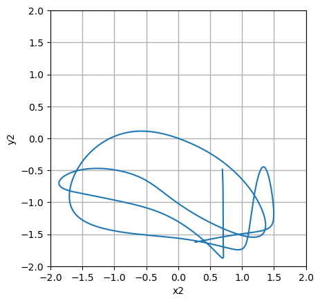

import scipy
import numpy as np
from numpy import cos, sin
import matplotlib.pyplot as plt
import matplotlib.animation as animationThe double pendulum problem
This post is based on an example of matplotlib.
Code
def pendulum(t, u, M1, M2, L1, L2, G):
# u[0] = theta1
# u[1] = omega1
# u[2] = theta2
# u[3] = omega2
du = np.zeros_like(u)
du[0] = u[1]
delta = u[2] - u[0]
den1 = (M1 + M2) * L1 - M2 * L1 * cos(delta) * cos(delta)
du[1] = (
(
M2 * L1 * u[1] * u[1] * sin(delta) * cos(delta) +
M2 * G * sin(u[2]) * cos(delta) +
M2 * L2 * u[3] * u[3] * sin(delta) - (M1 + M2) * G * sin(u[0])
) / den1
)
du[2] = u[3]
den2 = (L2 / L1) * den1
du[3] = (
(
-M2 * L2 * u[3] * u[3] * sin(delta) * cos(delta) +
(M1 + M2) * G * sin(u[0]) * cos(delta) -
(M1 + M2) * L1 * u[1] * u[1] * sin(delta) - (M1 + M2) * G * sin(u[2])
) / den2
)
return duG = 9.8 # acceleration due to gravity, in m/s^2
L1 = 1.0 # length of pendulum 1 in m
L2 = 1.0 # length of pendulum 2 in m
L = L1 + L2 # maximal length of the combined pendulum
M1 = 1.0 # mass of pendulum 1 in kg
M2 = 1.0 # mass of pendulum 2 in kg
t_stop = 5.0 # how many seconds to simulate# th1 and th2 are the initial angles (degrees)
# w10 and w20 are the initial angular velocities (degrees per second)
th1 = 120.0
w1 = 0.0
th2 = -10.0
w2 = 0.0u0 = np.radians([th1, w1, th2, w2])
u0array([ 2.0943951 , 0. , -0.17453293, 0. ])p = (M1, M2, L1, L2, G)
p(1.0, 1.0, 1.0, 1.0, 9.8)tspan = (0.0, t_stop)
tspan(0.0, 5.0)res = %timeit -o scipy.integrate.solve_ivp(pendulum, tspan, u0, args=p, dense_output=True, \
method='DOP853', rtol=1e-10, atol=1e-10)63.3 ms ± 839 μs per loop (mean ± std. dev. of 7 runs, 10 loops each)print(f"{res.best:.6f} seconds")0.062364 secondssol = scipy.integrate.solve_ivp(pendulum, tspan, u0, args=p, dense_output=True, \
method='DOP853', rtol=1e-10, atol=1e-10)sol message: The solver successfully reached the end of the integration interval.
success: True
status: 0
t: [ 0.000e+00 2.553e-02 ... 4.985e+00 5.000e+00]
y: [[ 2.094e+00 2.091e+00 ... -3.871e-01 -4.402e-01]
[ 0.000e+00 -2.555e-01 ... -3.738e+00 -3.521e+00]
[-1.745e-01 -1.761e-01 ... 7.104e+00 7.050e+00]
[ 0.000e+00 -1.201e-01 ... -3.549e+00 -3.909e+00]]
sol: <scipy.integrate._ivp.common.OdeSolution object>
t_events: None
y_events: None
nfev: 4004
njev: 0
nlu: 0t = np.linspace(0, t_stop, 500)
t.shape(500,)s = sol.sol(t)
sarray([[ 2.0943951 , 2.09389273, 2.09238573, ..., -0.36666802,
-0.40417351, -0.44021975],
[ 0. , -0.10027181, -0.20051768, ..., -3.81247888,
-3.6719432 , -3.52113898],
[-0.17453293, -0.17477032, -0.1754812 , ..., 7.12298826,
7.08752942, 7.04957895],
[ 0. , -0.04736169, -0.09446566, ..., -3.41150939,
-3.66460357, -3.90882817]])s.shape(4, 500)# theta1
s[0, :] array([ 2.0943951 , 2.09389273, 2.09238573, 2.08987451, 2.08635972,
2.08184231, 2.07632352, 2.0698049 , 2.06228836, 2.05377617,
2.04427099, 2.03377593, 2.02229454, 2.00983085, 1.99638943,
1.98197535, 1.96659427, 1.95025238, 1.93295643, 1.91471374,
1.89553213, 1.8754199 , 1.85438575, 1.83243875, 1.80958814,
1.78584331, 1.76121353, 1.73570785, 1.70933481, 1.68210224,
1.6540169 , 1.62508422, 1.59530785, 1.5646893 , 1.53322745,
1.500918 , 1.46775295, 1.43371989, 1.39880128, 1.36297364,
1.32620657, 1.28846171, 1.24969137, 1.20983715, 1.1688281 ,
1.12657866, 1.08298619, 1.03792806, 0.99125831, 0.94280406,
0.89236193, 0.83969567, 0.78453699, 0.72659457, 0.66557999,
0.60126609, 0.53359691, 0.46285337, 0.38981596, 0.31576919,
0.2422171 , 0.17044198, 0.10122448, 0.03485021, -0.02872957,
-0.08973502, -0.14844932, -0.20516057, -0.26013525, -0.31360838,
-0.36578172, -0.41682532, -0.46688021, -0.51606127, -0.56445994,
-0.6121465 , -0.65917205, -0.70557024, -0.75135872, -0.79654052,
-0.84110525, -0.88503034, -0.92828229, -0.97081783, -1.01258522,
-1.05352556, -1.0935741 , -1.13266158, -1.17071557, -1.20766181,
-1.24342545, -1.27793226, -1.31110977, -1.34288826, -1.37320165,
-1.40198827, -1.42919143, -1.45475989, -1.47864818, -1.50081672,
-1.52123181, -1.53986552, -1.55669543, -1.57170418, -1.58487908,
-1.59621142, -1.60569592, -1.61332996, -1.6191128 , -1.62304481,
-1.62512658, -1.62535807, -1.62373765, -1.62026121, -1.6149211 ,
-1.60770518, -1.59859567, -1.58756812, -1.57459027, -1.55962099,
-1.54260932, -1.52349393, -1.50220318, -1.47865646, -1.45276789,
-1.42445376, -1.39364601, -1.36031435, -1.32449866, -1.28634925,
-1.24616428, -1.20440261, -1.16164927, -1.11853126, -1.07561487,
-1.03333011, -0.99194588, -0.95158759, -0.91227401, -0.87395459,
-0.83653893, -0.7999169 , -0.76397119, -0.72858459, -0.69364384,
-0.65904154, -0.62467677, -0.59045515, -0.55628865, -0.52209513,
-0.48779804, -0.45332606, -0.4186129 , -0.38359716, -0.3482223 ,
-0.31243678, -0.27619425, -0.23945387, -0.20218073, -0.16434633,
-0.12592914, -0.0869152 , -0.04729873, -0.00708275, 0.03372036,
0.07508832, 0.11698858, 0.15937799, 0.20220264, 0.24539788,
0.28888842, 0.33258868, 0.37640325, 0.4202275 , 0.46394834,
0.50744509, 0.55059048, 0.59325168, 0.63529154, 0.67656977,
0.71694425, 0.75627242, 0.7944127 , 0.83122582, 0.86657636,
0.90033402, 0.93237501, 0.96258314, 0.99085089, 1.01708017,
1.04118281, 1.06308089, 1.08270659, 1.10000181, 1.1149175 ,
1.12741261, 1.1374528 , 1.14500888, 1.15005494, 1.15256639,
1.15251759, 1.14987941, 1.14461641, 1.1366838 , 1.12602401,
1.1125629 , 1.0962055 , 1.07683152, 1.05429082, 1.02839993,
0.99894175, 0.9656734 , 0.92835223, 0.88679762, 0.84101338,
0.79138105, 0.73885916, 0.68499537, 0.63158026, 0.58011461,
0.53149531, 0.48605199, 0.44374855, 0.40436928, 0.36763489,
0.33326142, 0.30098534, 0.27057186, 0.24181546, 0.21453737,
0.18858212, 0.16381405, 0.1401142 , 0.11737756, 0.0955109 ,
0.07443082, 0.05406232, 0.03433748, 0.01519455, -0.00342288,
-0.02156646, -0.03928357, -0.05661762, -0.07360829, -0.0902916 ,
-0.10669994, -0.12286203, -0.13880274, -0.15454298, -0.17009946,
-0.18548448, -0.20070577, -0.21576636, -0.23066455, -0.24539396,
-0.25994378, -0.27429912, -0.28844156, -0.3023498 , -0.31600048,
-0.32936909, -0.34243085, -0.35516168, -0.36753904, -0.37954268,
-0.39115531, -0.40236298, -0.41315547, -0.42352641, -0.43347327,
-0.44299728, -0.45210323, -0.4607992 , -0.4690963 , -0.47700832,
-0.48455145, -0.491744 , -0.49860613, -0.50515959, -0.51142757,
-0.51743452, -0.52320599, -0.52876861, -0.53414994, -0.53937846,
-0.5444836 , -0.54949568, -0.55444597, -0.55936673, -0.56429129,
-0.56925413, -0.57429096, -0.57943887, -0.58473648, -0.59022408,
-0.59594385, -0.60194007, -0.6082594 , -0.61495118, -0.62206774,
-0.62966485, -0.63780211, -0.6465435 , -0.65595792, -0.66611976,
-0.67710953, -0.68901444, -0.70192871, -0.71595368, -0.73119705,
-0.74777081, -0.76578689, -0.78534865, -0.80653616, -0.82938205,
-0.85383544, -0.87971524, -0.90666289, -0.93411881, -0.96135316,
-0.98756199, -1.0119963 , -1.03406466, -1.05337146, -1.06969796,
-1.08295641, -1.09314302, -1.1003016 , -1.1044994 , -1.10581283,
-1.1043198 , -1.10009618, -1.09321472, -1.08374525, -1.07175553,
-1.05731244, -1.04048307, -1.02133584, -0.99994134, -0.97637299,
-0.95070745, -0.92302469, -0.89340787, -0.86194288, -0.82871768,
-0.79382135, -0.75734304, -0.7193706 , -0.67998921, -0.63927981,
-0.59731756, -0.55417017, -0.50989631, -0.46454401, -0.41814905,
-0.37073346, -0.32230404, -0.27285094, -0.22234635, -0.17074336,
-0.11797526, -0.0639554 , -0.00857858, 0.04827514, 0.10673204,
0.16690872, 0.22888411, 0.29265532, 0.3580776 , 0.42480159,
0.4922419 , 0.55962136, 0.62610289, 0.69095463, 0.75366322,
0.81395537, 0.87175247, 0.92710381, 0.98012854, 1.03097537,
1.07979849, 1.12674457, 1.17194683, 1.21552287, 1.2575747 ,
1.29818975, 1.33744224, 1.37539479, 1.41209987, 1.44760125,
1.48193522, 1.51513175, 1.54721545, 1.5782065 , 1.60812134,
1.6369734 , 1.66477366, 1.69153112, 1.71725328, 1.74194649,
1.76561623, 1.78826743, 1.80990466, 1.83053226, 1.85015457,
1.86877597, 1.88640095, 1.90303423, 1.9186807 , 1.93334552,
1.94703404, 1.95975182, 1.97150461, 1.9822983 , 1.99213885,
2.00103229, 2.00898462, 2.01600181, 2.02208969, 2.02725394,
2.03150002, 2.03483311, 2.03725809, 2.03877947, 2.03940138,
2.03912749, 2.03796103, 2.03590473, 2.03296079, 2.02913088,
2.02441611, 2.01881703, 2.01233359, 2.00496515, 1.99671047,
1.98756769, 1.97753431, 1.96660722, 1.95478263, 1.9420561 ,
1.92842246, 1.91387583, 1.89840954, 1.88201609, 1.86468708,
1.84641313, 1.82718378, 1.80698732, 1.7858107 , 1.76363931,
1.74045677, 1.71624468, 1.6909823 , 1.66464622, 1.63720998,
1.60864353, 1.57891279, 1.547979 , 1.5157981 , 1.48232003,
1.44748799, 1.41123784, 1.37349749, 1.33418677, 1.29321779,
1.25049656, 1.20592627, 1.15941378, 1.11088037, 1.06027866,
1.00761653, 0.95298659, 0.89659479, 0.83877539, 0.77997726,
0.72071458, 0.66149456, 0.60274982, 0.54479927, 0.48784309,
0.43198138, 0.37724196, 0.32360712, 0.27103489, 0.21947412,
0.16887442, 0.11919239, 0.07039531, 0.0224631 , -0.02461066,
-0.07081848, -0.11613911, -0.16053801, -0.20396806, -0.24637036,
-0.28767532, -0.32780373, -0.36666802, -0.40417351, -0.44021975])# u[0] = theta1
# u[1] = omega1
# u[2] = theta2
# u[3] = omega2
x1 = +L1 * sin(s[0, :])
y1 = -L1 * cos(s[0, :])
x2 = +L2 * sin(s[2, :]) + x1
y2 = -L2 * cos(s[2, :]) + y1plt.plot(x2, y2)
plt.grid(linewidth=1)
plt.gca().set_aspect("equal")
plt.xlabel("x2")
plt.ylabel("y2")
plt.xlim((-2.0, 2.0))
plt.ylim((-2.0, 2.0))
plt.show()
fig = plt.figure(figsize=(5, 4))
ax = fig.add_subplot(autoscale_on=False, xlim=(-L, L), ylim=(-L, 1.))
ax.set_aspect('equal')
ax.grid()
line, = ax.plot([], [], 'o-', lw=2, markerfacecolor="red", markeredgecolor="black")
trace, = ax.plot([], [], '.-', lw=1, ms=2)
time_template = 'time = %.1f s'
time_text = ax.text(0.05, 0.9, '', transform=ax.transAxes)
def animate(i):
this_x = [0, x1[i], x2[i]]
this_y = [0, y1[i], y2[i]]
history_x = x2[:i]
history_y = y2[:i]
line.set_data(this_x, this_y)
trace.set_data(history_x, history_y)
time_text.set_text(time_template % (t[i]))
return line, trace, time_text
n = len(x1)
frames = np.arange(0, n, 10)
ani = animation.FuncAnimation(fig, animate, frames, blit=True)ani.save("ani_python.mp4", fps=10)